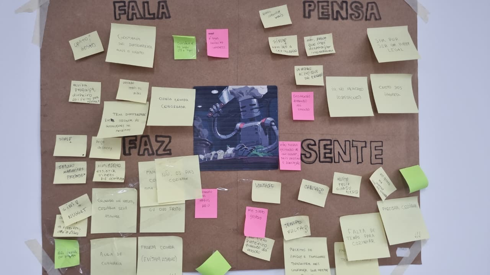
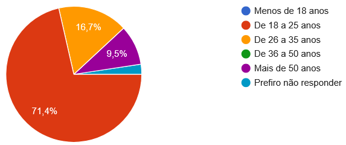
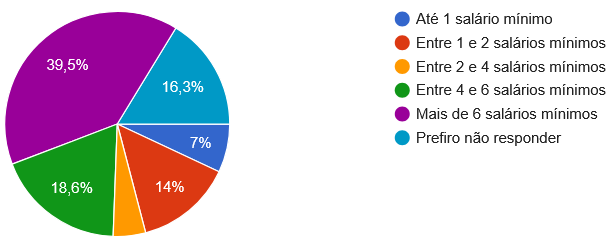
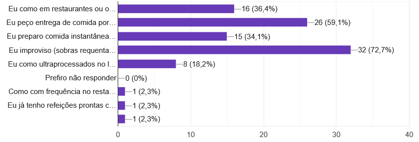

How Might We...
Como podemos tornar o processo de cozinhar mais fácil e divertido?
Integrantes: Arthur Erthal, Dawson Monteiro, Luan Lopes e Lucas Coutinho
Nosso projeto começa com a definição do problema central, a partir das discussões iniciais e observações sobre o comportamento das pessoas no dia a dia, percebemos que cozinhar muitas vezes é visto como algo trabalhoso e demorado. Diante disso, formulamos nosso design challenge utilizando o formato HMW, "How Might We..." A nossa pergunta norteadora foi como podemos tornar o processo de cozinhar mais fácil e divertido. Essa pergunta é importante porque não limita a solução, mas direciona o pensamento para melhorar a experiência do usuário, tanto do ponto de vista funcional quanto emocional. Não queremos apenas facilitar o hábito de cozinhar, mas também tornar esse momento mais leve e engajador.
Tabela CSV
Na etapa de desk research, organizamos nosso conhecimento utilizando a matriz CSD, certezas, suposições e dúvidas. Nas certezas, destacamos pontos como o impacto da gamificação, por exemplo o uso de recompensas e streaks, que ajudam na criação de hábitos. Também consideramos dados como o crescimento do uso de delivery, indicando que muitas pessoas deixam de cozinhar. Nas suposições, levantamos hipóteses que ainda precisam ser validadas, como a ideia de que o compromisso social pode incentivar o hábito de cozinhar, ou que a falta de planejamento desmotiva os usuários. Já nas dúvidas, identificamos questões importantes para investigação, como quem cozinha menos, quais são as dificuldades reais na cozinha e quais requisitos uma solução digital precisaria ter para ser prática no uso cotidiano. Essa etapa funciona como uma base de raciocínio, como montar um mapa antes de começar uma viagem, não resolve o problema, mas orienta melhor os próximos passos.
Elementos de gamificação (streaks em particular) aumentam a chance de formação de hábito no uso de plataformas digitais
Análise Competitiva
Em seguida, analisamos soluções existentes no mercado para entender o que já funciona e o que pode ser melhorado. Observamos plataformas como serviços de entrega de ingredientes e receitas, que facilitam o planejamento, além de sites e aplicativos de receitas que oferecem uma grande seleção de receitas e funções. Também analisamos soluções de outros domínios, como aplicativos de treino, que utilizam acompanhamento de progresso e feedback constante para manter o usuário engajado. Com isso, conseguimos identificar padrões importantes, como interfaces simples e diretas que ajudam na adesão do usuário, organização de conteúdo e personalização como diferenciais e o uso de feedback e progresso para aumentar o engajamento. Por outro lado, também encontramos problemas como a falta de padronização nas receitas, dificuldade de adaptação às preferências do usuário e experiências pouco motivadoras no longo prazo. Essa análise não serve para copiar soluções, mas para entender o que funciona, o que não funciona e onde existem oportunidades para melhorar no design.
Mapa de Empatia
Utilizamos o mapa de empatia para aprofundar o entendimento do usuário. Analisamos o que o usuário fala, pensa, faz e sente. No que ele fala, aparecem desejos como cozinhar melhor e ter mais autonomia. No que ele pensa, surgem preocupações como tempo, esforço e custo dos ingredientes. No que ele faz, percebemos comportamentos como recorrer a soluções rápidas, como delivery ou receitas simples. E no que ele sente, aparecem emoções como cansaço, frustração e, em alguns casos, falta de motivação. Essa etapa é essencial porque transforma dados em empatia, permitindo entender não apenas a tarefa de cozinhar, mas toda a experiência do usuário, incluindo suas dificuldades, expectativas e emoções. Com todas essas etapas, construímos uma base sólida para propor uma solução que realmente faça sentido, com o objetivo de tornar o hábito de cozinhar mais acessível, prazeroso e integrado à rotina das pessoas.

Análise Quantitativa
Na coleta de respostas ao formulário, obtivemos as respostas de 42 pessoas diferentes. Entre suas respostas, podemos tirar diversas conclusões, como:
• 53.5% são homens, 46.5% são mulheres (1 resposta foi não-séria, sendo desconsiderada).

• 71.4% tem 18 a 25 anos. Jovens são o grupo mais representado.

• A renda mais representada é a de uma renda familiar acima de 6 salários mínimos, mas há diversas respostas entre todas as opções.

• A maioria dos respondentes são alunos de faculdade, 69% tendo o ensino superior incompleto. Como o formulário foi distribuido num ambiente universitário, é um viés que merece ser reconhecido.

• Entre os sentimentos associados com o hábito de cozinhar, os mais relatados são a preguiça, o prazer e a ansiedade.

• No ranking da dificuldade das etapas de preparar comida, a parte mais difícil entre os respondentes é escolher o que cozinhar. Foi considerado um resultado surpreendente à equipe, especialmente considerando que as outras etapas são mais frequentemente consideradas "Normal" ou até "Fácil".
Entre as respostas sobre o porquê das dificuldades escolhidas, falta de tempo foi a preocupação mais recorrente. Respondentes citaram a demanda de tempo para comprar ingredientes, a ocupação de tempo com trabalho e estudos, o fato de morarem longe da faculdade e portanto perder mais tempo. Múltiplos respondentes também relatam a intimidação e tempo consumido ao escolher o que cozinhar e quais ingredientes comprarem, mas que o hábito de fazer a comida em si é mais fácil quando essa etapa se conclui.

• A maioria dos respondentes improvisa uma comida simples ou pedem comida por um app quando não sentem vontade de cozinhar. Ao entrevistar pessoas no exercício de mapa de empatia, muitos disseram que compram comida rápida de se preparar, como miojo ou comida congelada. É possível que comida instantânea seja mais popular entre os jovens, enquanto os mais velhos compram online com mais frequência, tendo uma renda maior. Comer comida instantânea acabou em uma frequência aproximadamente igual a comer em restaurantes.

• Quando perguntados sobre se querem dedicar mais tempo à culinária, a maioria dos respondentes deram sim como resposta, numa razão de aproximadamente 60 / 40. Dentre as razões dadas, os que não querem aprender ou já sabem cozinhar, ou não tem tempo suficiente para o hábito. Enquanto isso, os que querem dedicar mais tempo explicam que é uma habilidade importante de saberem para diversificarem a dieta, terem autonomia e economizar nos custos.
• A respeito dos impedimentos de cozinhar, a maioria relata ser culpa da preguiça (45.5%), desânimo (43.2%) ou a conveniência de outras alternativas (34.1%). Relatos de falta de tempo e cansaço também ocorreram no campo onde puderam digitar sua resposta.
• 70.5% mostraram interesse numa plataforma social para o incentivo de cozinhar, citando que gostariam de funcionalidades como comentar nas fotos da comida de outros para oferecer elogios, ver o que os amigos estão preparando, competir com eles pela qualidade da comida e até mesmo se organizar para eventos de cozinhar, como ter pessoas trazendo pratos diferentes para uma reunião.
• A maioria dos respondentes não utiliza aplicativos ou sites enquanto cozinha. Entre os que usam, citaram sites de receita como Tudogostoso, receitas.com, receitas nestlé e panelinha.com. Também citaram receitas salvas do youtube e uso de IA generativa.
• Quando uma receita não acaba satisfatoriamente, a maioria dos respondentes relatam frustração com si mesmos por não conseguirem seguir a receita, seguido de frustração com a receita em si. É possível que muitas das receitas disponíveis não sejam claras o suficiente.

• Somente 31.8% dos respondentes usam aplicativos lúdicos regularmente (Duolingo, Khan Academy, Hevy, Habitica, etc). Quando perguntados sobre os aspectos favoritos desses programas, a maioria relatam o mantimento da ofensiva os ajudavam a se comprometer com as tarefas.
A partir disso, concluímos que o aspecto social num serviço de receitas é um dos aspectos a se priorizar. O problema mais recorrente entre os respondentes era a preguiça ou falta de tempo no hábito de cozinhar, então também vale considerar formas de facilitar a escolha das receitas.
Analise Qualitativa
• Analisando as respostas obtidas na entrevista com os participantes ideais, nós percebemos que as definições de sucesso dos entrevistados são bem diferentes, e que mesmo entre usuários ideais, há diferentes motivações para reforçar o hábito da cozinha.
Um entrevistado disse "Pra mim é conseguir fazer uma refeição completa. Proteína, carboidrato, etc, com menos de vinte reais e em menos de quarenta minutos.", enquanto outro expressou um desejo de impressionar amigos e visitas com suas habilidades culinárias.
Ambos tiveram experiências frustradas com sites de receitas, e gostaram muito da ideia de compartilhar receitas com os amigos, e de ver imagens reais dos pratos como realmente vão ficar.
Os dois entrevistados usam plataformas com elementos gamificados, mas têm experiências bem diferentes nesses aplicativos. Um deles relatou que gosta do aspecto competitivo dos leaderboards, e que a motivação gerada pela ofensiva é maior do que o desânimo de perder a sequência. O outro relatou que não gosta da ofensiva porque ela acaba se tornando mais importante que o hábito em si, e encorajando o usuário a fazer apenas o mínimo ou a trapacear para manter a sequência. Ambos gostaram da ideia de colecionar conquistas e distintivos digitais como recompensa por cozinhar consistentemente e preparar pratos variados. No entanto, os dois mostraram mais interesse no aspecto social (Letterboxd, Gymrats) e na interação com amigos do que nos mecanismos gamificados, que condiz com os resultados da nossa pesquisa quantitativa.
Um dos entrevistados destacou que o planejamento é a maior barreira para que ele desenvolva o hábito de cozinhar no dia a dia, e sugeriu que o nosso aplicativo contasse com funcionalidades que ajudam a planejar o orçamento e os ingredientes para minimizar as idas ao mercado, os gastos e o desperdício: "Eu ia querer que [o aplicativo] me ajudasse a planejar a semana baseado no que eu tenho em casa e no meu orçamento. Tipo, eu falo "tenho R$80 pra semana e tenho arroz, feijão e frango"
Os dois entrevistados se interessaram na competição amigável:
"No GymRats, que é o app que uso pra academia, você vê o treino dos amigos em tempo real e aquilo cria uma competição saudável. Com culinária seria igual. Se eu vejo que meu amigo já cozinhou quatro vezes na semana e eu zero, isso me incomoda. Eu TERIA que fazer alguma coisa."
Mas o outro ressaltou que os elementos sociais tem que ter um tom de brincadeira, e que a comparação com amigos pode virar uma fonte de ansiedade se for levada muito a sério.
Um dos entrevistados também comentou que o aspecto mais interessante da ideia é a realidade das interações. Que está enjoado de ver imagens e vídeos de receitas feitas por profissionais com muito mais recursos, habilidade e orçamento que ele que, ao invés de servirem como inspiração, acabam desmotivando por parecerem inalcançáveis.
• Uma coisa que aparece forte nos dois casos é que o problema não é saber cozinha, mas sim manter a consistência. A sofia até cozinha bem e o rodrigo também consegue cozinhar quando tenta então habilidade não é o principal bloqueio. O problema é transformar isso em hábito no dia a dia.
Outro ponto muito forte é a questão da energia e contexto do momento. A Sofia mostra claramente que existe uma diferença entre “a pessoa do sábado” (motivada, planeja, compra ingredientes) e “a pessoa da terça” (cansada, sem energia, toma decisão rápida). Isso é um insight importante: o planejamento atual não considera o estado real do usuário no momento de cozinhar. Já o Rodrigo mostra algo parecido, mas em forma de “pico de motivação que desaparece”, ou seja, ele entra animado e depois volta para a inércia.
entendemos que tem um padrão muito claro de que estímulo externo ativa o comportamento. A pessoa 6 cozinha quando vê um vídeo, e a pessoa 5 quando vê algo de uma amiga. Mas esse estímulo não se sustenta sozinho, ele precisa virar rotina. Então o problema não é gerar interesse, é manter continuidade.